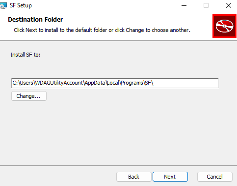
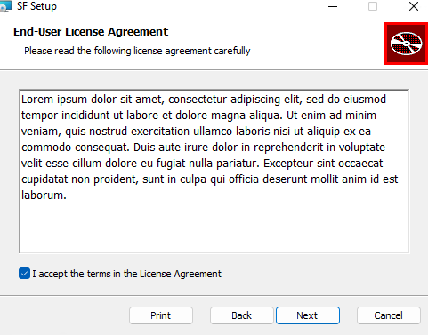
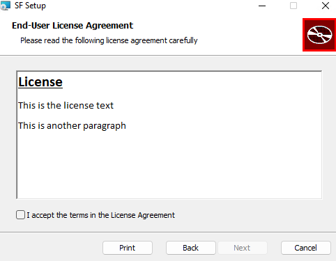

Background
Follows up on Windows installer with WiX 4 - part 3.
We’ll try to wrap up a proverbial minimally viable product. I need to work on other projects and bit pressed for time.
Walkthrough
Upper and Lower case variable names
I will first recap on a not so small thing I found out since last post: to be overridable from the outside (e.g. command line) variables must be uppercase. In hindsight, clear, but not in your face from the online documentation. I am not sure which video in the WiX4 playlist I was looking at exactly, but this may be All the Ways to Change. Variables and Variables. Directories and Properties or one or two after.
So, if you have a <Directory Id="InstallFolder" Name="SF"> in your packaging file, this is not user-overridable at install time; you need instead <Directory Id="INSTALLFOLDER" Name="SF">. This will be useful if and once I tackle having an optional user-defined install path. Meanwhile, see the videos for a comprehensive explanation.
Code signing
At this point, see repo at commit 2de226658cca40db801b4e2c115721df0d2aa3ff
I thought I had documented code signing, but apparently not. It was straightforward to adapt from the documentation. Adding to the .wixproj file:
<Target Name="SignCabs">
<Message Importance="high" Text="SignCabs: @(SignCabs)" />
<Exec Command='signtool.exe sign /v /f $(TestCertificate) /p $(TestPassword) %(SignCabs.FullPath)' />
</Target>
<Target Name="SignMsi">
<Message Importance="high" Text="SignMsi: @(SignMsi)" />
<Exec Command='signtool.exe sign /v /f $(TestCertificate) /p $(TestPassword) "%(SignMsi.FullPath)" ' />
</Target>then, from a VS dev prompt:
set TestCertificate="c:\blahcredentials\myfile.pfx"
set TestPassword=blahblahblahsomething123456789
msbuild /p:Configuration=Debug /p:Platform=x64 sf.wixprojcompletes successfully.
Scope
So, our minimum viable installer should have at least:
- Installer leaves the system such that the path to the DLLS is identified by a persistent
LIBRARY_PATHenvironment variable. A priori, done for a user install context. - Admin system install option: if the installation is performed by someone with admin rights, the env var is set up system wise, and the install folder is read-accessible by all, at a minimum.
- code signing
Desirable:
- A minimal UI with a decent licence agreement file. I had a stab at it from converting a more elaborate v3 example, but was a bit overwhelmed.
- shortcut to installation folder
Minimal installer UI
As I write, and it may be a recent addition, the WiX v4 doc has a page on WixUI dialog library with an example straightforward to try:
<Wix xmlns="http://wixtoolset.org/schemas/v4/wxs" xmlns:ui="http://wixtoolset.org/schemas/v4/wxs/ui">
<Package ...>
...
<ui:WixUI
Id="WixUI_InstallDir"
InstallDirectory="INSTALLFOLDER"
/>
</Package>
</Wix>From the previous conversion of a wixv3 project I had seen something with an enclosing <UI> element, which is not necessary, but works.
<UI Id="MyWixUI">
<ui:WixUI
Id="WixUI_InstallDir"
InstallDirectory="INSTALLFOLDER"
/>
</UI>Testing the installer brings an intuitive behavior, with default but changeable installation directory:

License
We get a default license.

The new doc page has a section specifying-a-license-file:
<WixVariable
Id="WixUILicenseRtf"
Value="license.rtf"
/>I was not sure where to put it, tried my luck as a child element of the <Package> element, and this works:

Admin mode install for all users?
There is a Scope attribute of the Package that can be set to the value "perUserOrMachine":
<Package Name="SF" Manufacturer="CSIRO" Version="$(Version)" UpgradeCode="2e7d7f1d-1111-1111-1111-b363c7ce3a1e" Scope="perUserOrMachine">I am not sure what this does or can do yet though.
Conclusion
At this point, see repo at commit 338ea7f15502ba12223b438e19eee43ba74d9f14
Got to go to Kizomba class now. To be continued…